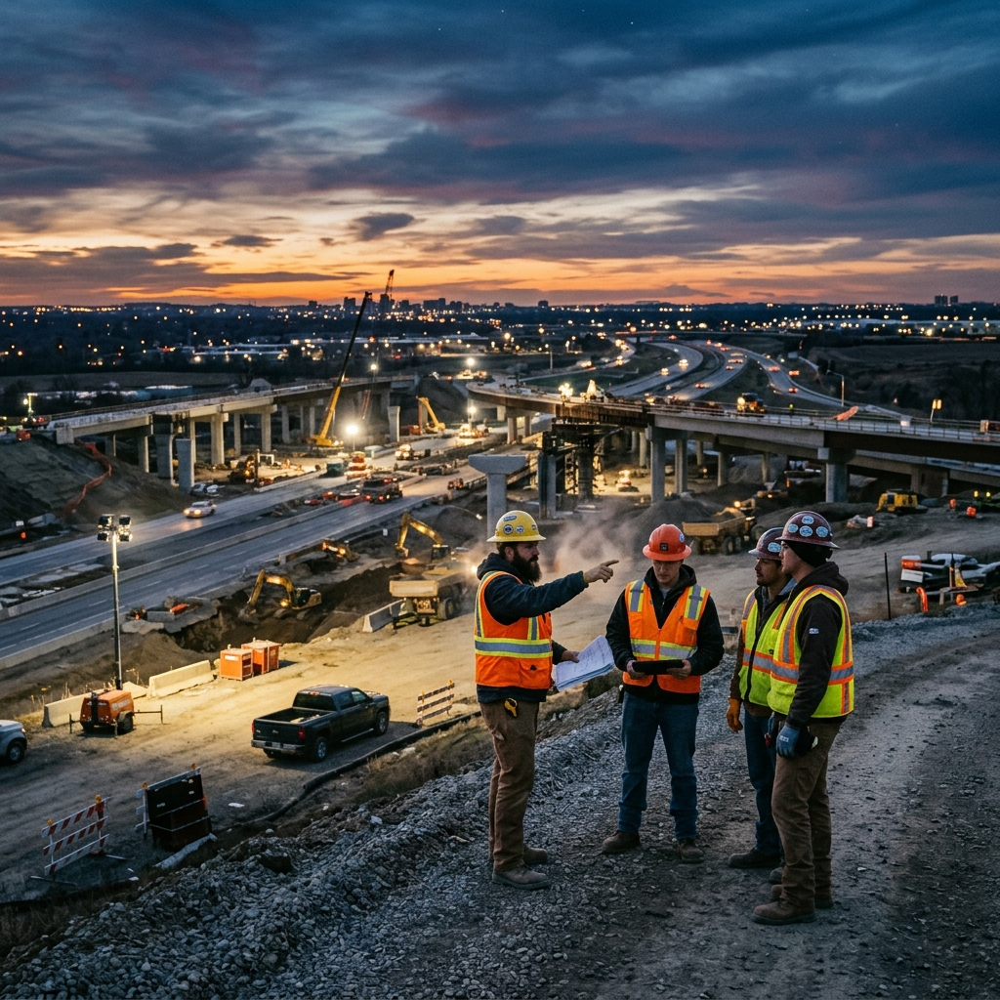
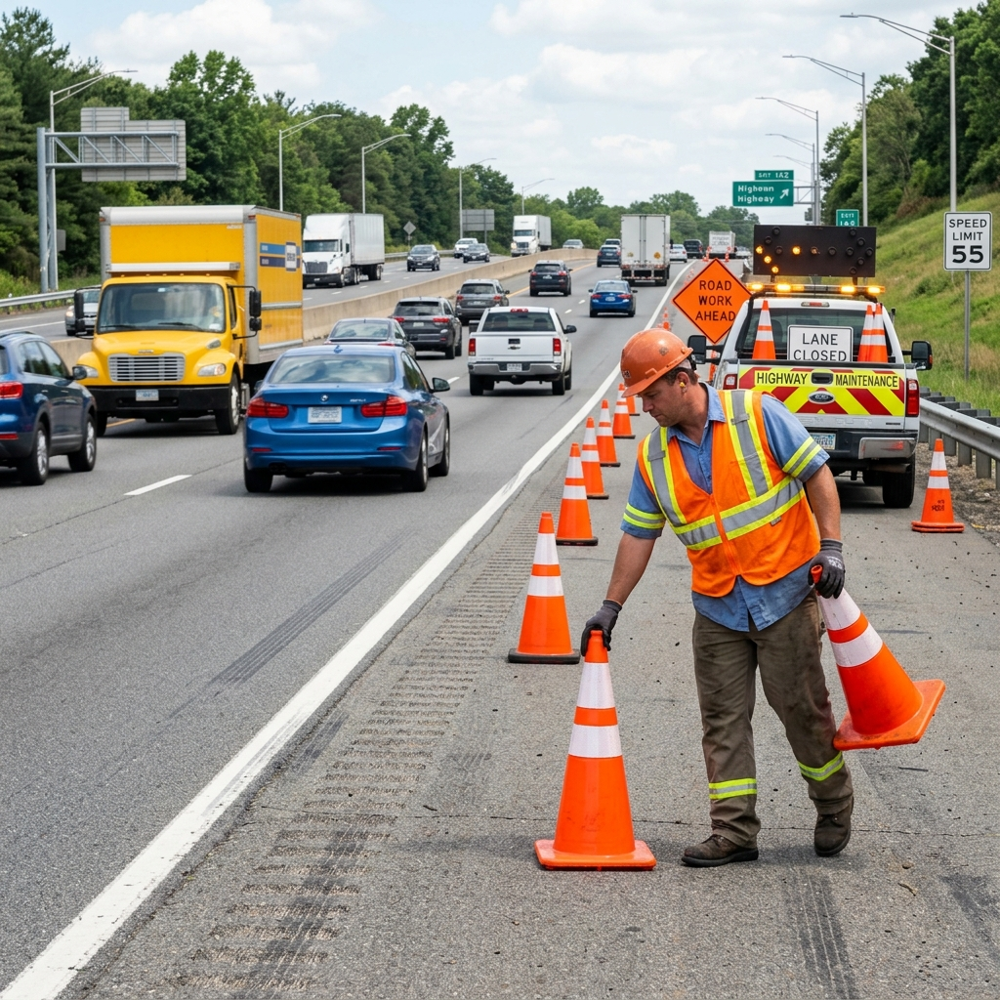
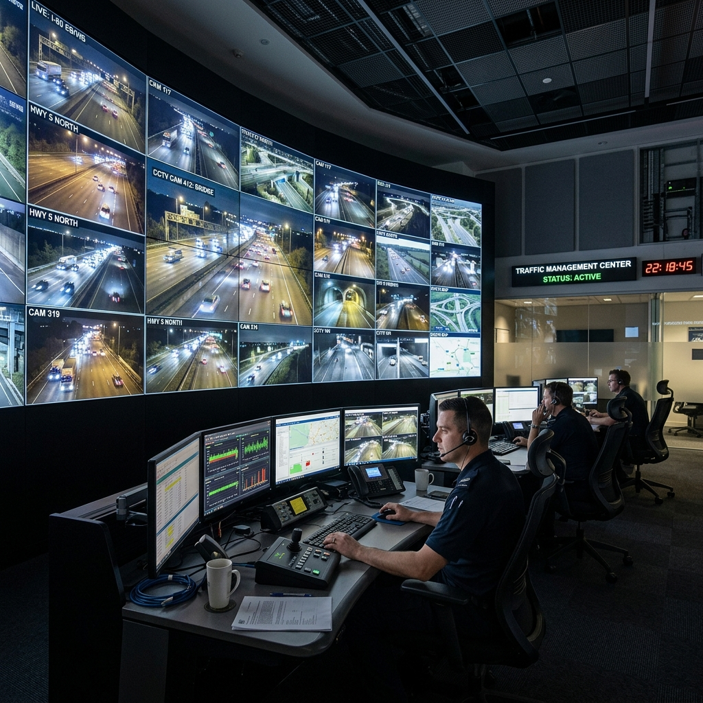
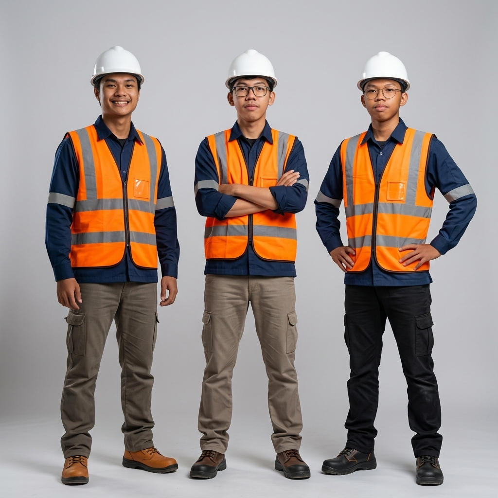

Panduan Keselamatan & Kesehatan Kerja (K3)
Informasi komprehensif mengenai pedoman resmi standar keselamatan kerja di seluruh lingkungan operasional PT Jasa Marga (Persero) Tbk.
Visi & Misi Keselamatan Jasa Marga
"Inovasi menuju peningkatan nilai yang berkelanjutan."
Sebagai bagian dari Misi Perusahaan, kami berkomitmen untuk:
Mengembangkan inovasi untuk memberikan pelayanan unggul, meningkatkan keselamatan, kenyamanan, dan kemudahan perjalanan.
Menerapkan prinsip-prinsip lingkungan, sosial, dan tata kelola Perusahaan yang baik untuk memastikan ketahanan usaha operasional.
Prinsip Utama (Golden Rules)
Pondasi sistem budaya kerja aman yang wajib dipahami dan diterapkan oleh setiap individu tanpa pengecualian.
Compliance
Kepatuhan mutlak terhadap seluruh regulasi internal, standar ISO 45001, dan undang-undang K3 nasional dalam setiap aktivitas pekerjaan.
Risk Assessment
Melakukan identifikasi bahaya dan penilaian risiko (IBPR) secara proaktif sebelum memulai setiap pelaksanaan aktivitas di lapangan.
Personal Safety
Memastikan setiap individu memiliki wewenang untuk menghentikan pekerjaan (Stop Work Authority) jika ditemukan kondisi tidak aman.
Environment
Memastikan setiap operasional, meminimalkan jejak karbon, pengelolaan limbah B3 sesuai standar pengelolaan lingkungan.
Health
Pemeriksaan kesehatan secara berkala dan pemantauan kondisi kebugaran secara rutin. Medical Check Up dan pemeriksaan ringan per-kerja.
Prosedur Keselamatan Operasional Detil
Instruksi kerja standar untuk menjaga bahaya keamanan di bidang risiko tinggi.

MAINTENANCEPemeliharaan Jalan Tol
Aktivitas perbaikan arus lalu lintas, aspal perkerasan jalan, perbaikan jembatan dan struktur di sepanjang jalur Jasa Marga gerbang jalan.
- Pemasangan rambu peringatan sesuai standar jarak 100m, 50m, hingga 20m sebelum mencapai area kerja dan pengalihan arus yang aman.
- Penempatan Traffic Attenuator Mobile (TMA) sebagai peredam benturan di belakang area kerja.
- Selalu menggunakan APD standar pada kondisi area pencahayaan visual yang terlihat jelas oleh pengemudi di jarak jauh.

OPERATIONALOperasi Gerbang Tol
Penerapan pengamanan petugas transaksi tol pada aktivitas observasi, pengawasan, pemeliharaan alat gardu elektronik gerbang.
- Para petugas tidak menyeberang jalur transaksi sembarangan, wajib menyeberang via jembatan/underpass gardu.
- Pemeliharaan alat mekanikal elektrikal gardu tol menggunakan prosedur yang aman dari risiko tersetrum.
- Proses administrasi e-Toll petugas dipastikan aman dari lalu lintas kendaraan.
Zona Konstruksi Baru
Pembangunan infrastruktur tol baru dan fasilitas aset tol, berpotensi risiko tinggi yang memerlukan pengamanan ekstra ketat.
- Setiap aktivitas bekerja tinggi harus memiliki Ijin Kerja di Tempat Tinggi (IKTT) yang dikoordinasikan dengan HSE.
- Sertifikasi Keahlian (SKA) wajib untuk seluruh operator alat berat sebelum operasional harian.
- Pemasangan dokumentasi jalur konstruksi dan rekayasa lalu lintas aktif supaya aman.
Detail Panduan Alat Pelindung Diri (APD)
Safety Helmet (Helm Proyek)
Wajib digunakan oleh seluruh staf operasional jalan tol, kontraktor, kru dalam konstruksi. Helm terbuat dari bahan HDPE tebal dan ringan, dirancang serap redaman mekanik. Identifikasi warna: Putih (Supervisi), Kuning (Pekerja), Biru (Mekanik), Hijau (K3).
Safety Vest (Rompi Reflektif)
Elemen krusial visibilitas staf di area lalu lintas operasional jalan tol, siang & malam. Harus memiliki pita reflektor standar EN ISO 20471. Warna cerah dirancang agar penerangan di malam hari/hujan tetap terlihat pengemudi.
Safety Shoes (Sepatu Safety)
Melindungi kaki dari risiko benda tajam, kejatuhan beban, dan kepelesetan. Bersistem standard SNI dengan inner metal pelindung jari. Sol anti slip, dan ditambahkan fitur ketahanan air dan isolator listrik.

Protokol Penanganan Keadaan Darurat
Tindakan responsif yang harus segera dilaksanakan saat terjadi insiden untuk meminimalisir dampak kerugian.
Evakuasi & Lokalisasi
Hentikan segera semua operasional. Arahkan semua personel menuju Titik Kumpul (Assembly Point) terdekat. Lokalisasi potensi bahaya di area tol dengan traffic cone jarak minimum 50 m. Identifikasi korban & area terdekat.
Aktivasi Jalur Pelaporan
Berikan informasi jelas mengenai lokasi kejadian, jenis insiden, perkiraan data korban ke Pusat Traffic Information Center (TIC). Jangan menunda menginformasikan evakuasi pertolongan pertama ambulans.
Penanganan Awal & Sterilisasi
Lakukan tindakan P3K sebelum tim medis tiba. Ruang evakuasi dipastikan terbuka aman dari asap. Tunggu di area steril dan ikuti arahan petugas jalan raya sampai tim Senkom Tiba di area kejadian.
Ringkasan Komitmen K3 Jasa Marga
"Keselamatan bukan sekedar aturan, melainkan nilai utama yang tidak dapat ditawar-menawar."
Dewan Direksi dan Manajemen PT Jasa Marga (Persero) Tbk menegaskan komitmen kuat mereka untuk mencapai target Zero Fatality dan Zero Accident di setiap lini operasional. Budaya K3 adalah tanggung jawab proaktif yang dimulai dari kesadaran individu untuk menjaga diri sendiri, rekan kerja, dan lingkungan sekitar.
Informasi diatas merupakan ringkasan umum pedoman kebijakan K3. Panduan lengkap dan SOP dipegang resmi PT Jasa Marga (Persero) Tbk.